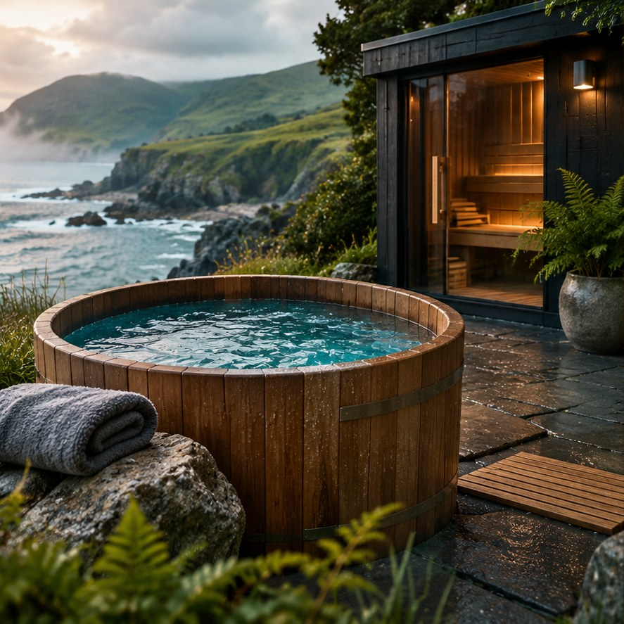

THE COLD RITUAL
Cold & Recovery
Feel refreshed. Find your balance.
A moment to cool down, breathe and reconnect — at your own pace.
01
Pause. Hydrate and let your body cool naturally.
02
Ease in. Fresh air or a lukewarm shower is a great start. Cold water is optional.
03
Restore. Dry off, warm up gently and enjoy the calm.
Cold-water safety essentials
Cold immersion can strain the heart and circulation. Never jump into unknown water, swim alone, or hold your breath or hyperventilate in water. If you have a heart or circulatory condition, are pregnant, or have medical concerns, seek medical advice first. Stop if you feel dizzy or unwell.